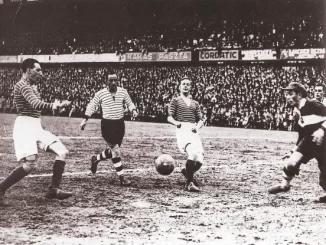
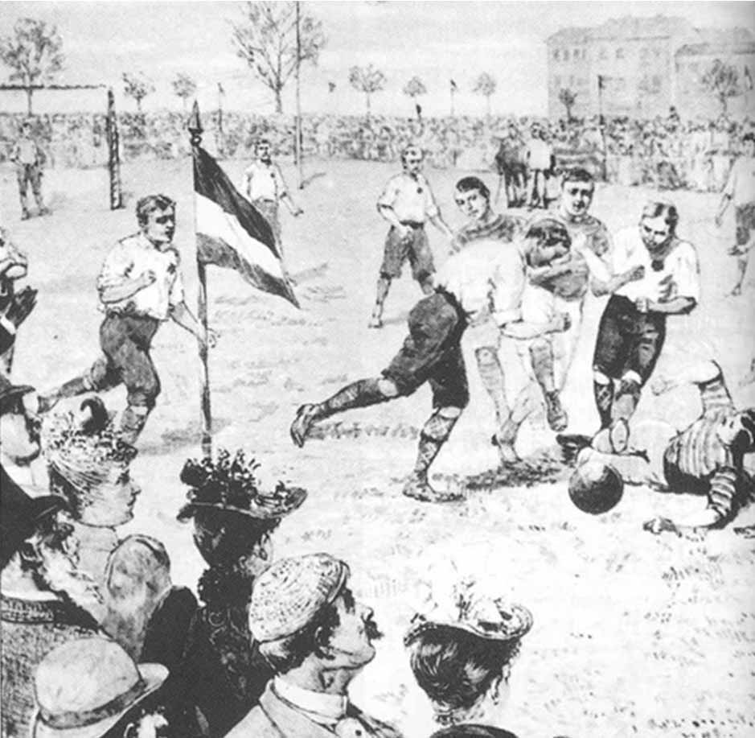

A labdarúgás a világ egyik legnépszerűbb sportja, több mint 4 milliárd rajongóval, és minden kontinensen milliók játszák és követik. De hogyan kezdődött mindez? Mikor és hogyan vált a labdarúgás a globális játékká? Ezen az oldalon felfedezheted a sport történetének legfontosabb állomásait, fejlődését és hatását a világra.
|  |
|  |
A labdarúgás története rendkívül gazdag és izgalmas, több ezer éves múltra tekint vissza. A sport, amelyet ma a világ legnépszerűbb játékaként tartunk számon, hosszú utat tett meg az első kezdetektől a modern, globálisan elterjedt és szeretett sportággá válásáig.